1、JavaScript简史
- JavaScript的起源
- 浏览器战争
- DOM的演变史
1.1、JavaScript的起源
JavaScript是Netscape公司与Sun公司合作开发的。在JavaScript出现之前，WEB浏览器不过是一种能够显示超文本文档的简单的软件。而在JavaScript出现之后，网页的内容不再局限于枯燥的文本，它们的可交互性得到了显著的改善。JavaScript的第一个版本，即JavaScript 1.0版本，出现在1995年推出的Netscape Navigator 2浏览器中。
1.2、DOM
什么是DOM？简单地说，DOM是一套对文档的内容进行抽象和概念化的方法。
在1998年，W3C发布了第一级的DOM规范。这个规范允许访问和操作HTML页面中的每一个单独的元素。所有的浏览器都执行了这个标准，因此，DOM的兼容性问题也难觅踪影了。DOM可被JavaScript用来读取、改变HTMl、XHTML以及XML文档。DOM被分为不同的部分（核心、XML及HTML）和级别（DOM Level 1/2/3）
1.3、浏览器战争
Netscape Navigator 4 发布于1997年6月，IE4发布于同年10月。这两种浏览器都对它们的早期版本进行了许多改进，大幅扩展了DOM，使能够通过JavaScript完成的功能大大增加。而网页设计人员也开始接触到一个新名词：DHTML
1.3.1、DHTML
DHTML是“Dynamic HTML”(动态HTML)的简称。DHTML并不是一项新技术，而是描述HTML、CSS和JavaScript技术组合的术语。DHTML背后的含义是：
- 利用HTML把网页标记为各种元素
- 利用CSS调置元素样式和它们的显示位置
- 利用JavaScript实时地操控页面和改变样式
不幸的是，NN4和IE4浏览器使用的是两种不兼容的DOM。换句话说，虽然浏览器制造商的目标一样，但他们在解决DOM问题时采用的办法却完全不同。
1.3.2、浏览器之间的冲突
Netscape公司的DOM使用了专有元素，这些元素称为层（layer）。层有唯一的ID，JavaScript代码需要像下面这样引用它们：
1 | document.layers['myelement'] |
而在微软公司的DOM中这个元素必须像下面这样的引用
1 | document.all['myelement'] |
这两种DOM的差异并不止这一点。假设你想找出myelement元素的left位置并把它赋值给变量xpos，那么在NN4浏览器里必须这样做：
1 | var xpos = document.layers['myelement'].left; |
而在IE4浏览器中，需要使用如下所示的语句才能完成同样的工作：
1 | var xpos = document.all['myelement'].leftpos; |
这就导致了一种很可笑的局面：程序员在编写DOM脚本代码时必须知道它们将运行在哪种浏览器环境里，所以在实际工作中，许多脚本都不得不编写两次，一次为NN4。另一次为IE。同时，为了确保能够正确地向不同的浏览器提供与之相应的脚本，程序员还必须编写一些代码去探查在客户端运行的浏览器到底是哪一种。
DHTML打开了一个充满机会的新世界，但想要进入其中的人们却发现这是个充满苦难的世界。因此，没多久DHTML就从一个大热门变成一个人们不愿提起的名词，而对这种技术的评价也很快地变成了“宣传噱头”和“难以实现”。
1.4、制定标准
就在浏览器制造商以DOM为武器展开营销大战的同时，W3C不事声张地结合大家的优点推出了一个标准化的DOM。令人欣慰的是，Netscape、微软和其他一些浏览器制造商们还能抛开彼此的敌意而与W3C携手制定新的标准，并于1998年10月完成了“第1级DOM”（DOM level 1）
回到刚才的例子，我们已经用<div>标签定义了一个ID为myelement的页面元素，现在需要找出它的left位置并把这个值保存到变量xpos中。下面是使用新的标准化DOM时需要用到的语法：
1 | var xpos = document.getElementByID('myelement').style.left |
乍看起来，这与刚才那两种非标准化的专有DOM相比并没有明显的改进。但事实上，标准化的DOM有着非常远大的抱负。
浏览器制造商们感兴趣的只不过是通过JavaScript操控网页的具体方法，但W3C推出的标准化DOM却可以让任何一种程序设计语言对使用任何一种标记语言编写出来的任何一份文档进行操控。
1.4.1、浏览器以外的考虑
DOM是一种API（应用编程接口）。简单地说，API就是一组已经得到有关各方共同认可的基本约定。在现实世界中，相当于API的例子包括（但不限于）摩尔斯码、国际时区、化学元素周期表。以上这些都是不同学科领域中的标准，它们使得人们能够更方便地交流与合作。如果没有一个统一的标准，事情往往会演变成一场灾难。别忘了，因混淆制度量衡与公制度量衡至少导致过一次火星探测任务的失败。
在软件编程领域中，虽然存在着多种不同的语言，但很多任务却是相同或相似的。这也正是人们需要API原因。一旦掌握了某个标准，就可以把它应用在许多不同的环境中。虽然语法会因为使用的程序设计语言而有所变化，但这些约定却总是保持不变的。
因此，虽然本书的重点是教会你如何通过JavaScript使用DOM，当你需要使用诸如PHP或Python之类的程序设计语言去解析XML文档的时候，你获得的DOM新知识将会有很大的帮助。
W3C对DOM的定义是：“一个与系统平台和编程语言无关的接口，程序和脚本可以通过这个接口动态地访问和修改文档的内容、结构和样式。”W3C推出的标准化DOM，在独立性和适用范围等诸多方面，都远远超出了各自为战的浏览器制造商们推出的各种专有DOM。
1.4.2、浏览器战争的结局
我们知道，浏览器市场份额大战中微软公司战胜了Netscape，具有讽刺意味的是，专有DOM和HTML标记对这个最终结果几乎没有产生影响。IE浏览器注定能击败其他对手，不过是因为所有运行Windows操作系统的个人电脑都预装了它。
受浏览器战争影响最重的人群是那些网站设计人员。跨浏览器开发曾经是他们的噩梦。除了刚才提到的那引些在JavaScript实现方面的差异之外，Netscape Navigator和IE这两种浏览器在对CSS的支持方面也有许多非常不同的地方。而编写那些可以同时支持这两种浏览器的样式表和脚本的工作也成了一种黑色的艺术。
浏览器制造商的自私姿态遭到人们的激烈反对，一个名为Web标准计划（简称WaSP，http://webstandards.org/ ）的小组应运而生。WaSP小组采取的第一个行动就是，鼓励浏览器制造商们采用W3C制定和推荐和各项标准，也就是在浏览器制造商们的帮助下得以起草和完善的那些标准。
或者是因为来自WaSP小组的压力，又或许是因为企业的内部决策，下一代浏览器产品对WEB标准的支持得到了极大的改善。
1.4.3、崭新的起点
早期浏览器大战至今，浏览器市场已经发生了巨大的变化，而且到了今天，这一切也几乎每天都变化。有的浏览器，比如Netscape Navigator，差不多已经从人们的视野中消失了，而新一代浏览器则陆续登台亮相。
苹果公司在2003年首次发布了它的Safari浏览器（基于WebKit），它从一开始就坚定不移地遵循DOM标准。今天，包括firefox、Chrome、Opera和IE，以及一些基于WebKit的其他浏览器都对DOM有着良好的支持。很多最潮的智能手机浏览器都在使用WebKit渲染引擎，推动着手持浏览器开发不断向前，让手机上网的体验甚至好过了使用某些桌面浏览器。
注意：WebKit( http://webkit.org )是Safari和Chrome采用的一个开源Web浏览器引擎。以WebKit和Gecko（ Firefox的核心，https://developer.mozilla.org/en/Gecko ）为代表的开源引擎，在促进微软的Trident（IE核心）等专有浏览器引擎逐步向WEB标准靠拢方面起到特别积极的作用。
今天，几乎所有的浏览器都内置了对DOM的支持。20世纪90年代后期的浏览器大战和硝烟已经散尽。现在的浏览器厂商无一不在争先恐后地实现最新规范。我们已经目睹了由异步数据传输技术（Ajax）所引发的学习DOM脚本编程的热潮，而HTML5 DOM的众多新特性，怎能不让人对Web的未来浮想联翩？HTML5极大的改进了标记的语义，让我们通过audio和video得以控制各种媒体，canvas元素具备了完善的绘图能力，浏览器本地存储超越了cookie限制，更有内置的拖放支持，等等。
WEB设计师的日子已经今非昔比。尽管还没有一款浏览器完美无瑕地实现W3C DOM，但所有现代浏览器对DOM特性的覆盖率都基本达到了95%，而且每款浏览器都几乎会在第一时间实现最新的特性。这意味着什么？意味着大量的任务都不必依靠分支代码了。以前为了探查浏览器，我们不得不编写大量分支判断脚本，现在，终于可以实现“编写一次，随处运行”的梦想了。只要遵循DOM标准，就可以放心大胆地去做，因为你的脚本无论在哪里都不会遇到问题。
2、JavaScript语法
- 语句
- 变量和数组
- 操作符
- 条件语句和循环语句
- 函数与对象
2.1、准备工作
编写JavaScript脚本不需要任何特殊的软件，一个普通的文本编辑器和一个WEB浏览器就足够了。用JavaScript编写的代码必须通过HTML/XHTML文档才能执行。有两种方式可以做到这点。第一种方式是将JavaScript代码放到文档<head>标签中的<script>标签之间：
1 |
|
一种更好的方式是把JavaScript代码存为一个扩展名为.js的独立文件。典型的作法是在文档的<head>部分放一个<script>标签，并把它的src属性指向该文件：
1 |
|
但最好的做法是把<script>标签放到HTML文档的最后，</body>标签之前：
1 |
|
注意：前面例子中的<script>标签没有包含传统的type="text/java script" 属性。因为脚本默认是JavaScript，所以没必要指定这个属性。
如果打算实践一下本章中的例子，用一个文本编辑器创建两个文件。先创建一个简单的HTML或XHTML文件，保存为诸如test.html之类的名称。这个文件一定要包含一个<script>标签，这个标签的src属性设置成你创建的第二个文件的名字，比如example.js。你的test.html文件应该包含如下内容：
1 |
|
可以把本单中的任何一个示例复制到你的example.js文件中。虽说那些示例没有什么特别令人激动的地方，但它们可以把有关的语法演示得明明白白。
在本书后面的单节里，我们将演示如何使用JavaScript改变文档的行为和内容。但在本章里，我们只使用一个简单的对话框来显示消息。
如果改变了example.js文件的内容，只需在WEB浏览器中重新载入test.html文档即可看到效果。WEB浏览器会立刻解释并执行你的JavaScript代码。
程序设计语言分为解释型和编译型两大类。Java或C++等语言需要一个编译器（compiler）。编译器是一种程序，能够把用JAVA等高级语言编写出来的源代码翻译为直接在计算机上执行的文件。
解释型程序设计语言不需要编译器–它们仅需要解释器。对于JavaScript语言，在互联网环境下，WEB浏览器负责完成有关的解释和执行工作。浏览器中的JavaScript解释器将直接读入源代码并执行。浏览器中如果没有解释器，JavaScript代码就无法执行。
用编译型语言编写的代码有错误，这些错误在代码编译阶段就能被发现。而解释型语言代码中的错误只能等到解释器执行到有关代码时才能被发现。
与解释型语言相比，编译型语言往往速度更快，可移值性更好，但它们的学习曲线也往往相当陡峭。
JavaScript的优点之一就是相当容易入门，但千万不要因此小看JavaScript，其实它能完成许多相当复杂的编程任务。不过，本章主要介绍它最基本的语法和用法。
2.2、语法
英语是一种解释型语言。在阅读和处理我们用英语写出来的文字时，你就相当于一个英语解释器。只要遵守英语的语法规则，我们想表达的意思就可以被正确地解读。这些语言结构方面的各有项规则，我这就称之为“语法”。如同书面的人类语言，每种程序设计语言也都有自己的语法。JavaScript的语法与Java和C++语言的语法非常相似。
2.2.1、语句
用JavaScript编写的脚本，与其他语言编写出来的脚本一样，都由一系统指令构成，这些指令叫做语句（statement）。只有按照正确的语法编写出来的语句才能得到正确的解释。JavaScript语句与英语中的句子很上似。它们是构成任何一个脚本的基本单位。英语语法要求每个句子必须以一个大写字母开头、以一个句号结尾。JavaScript在这个方面的要求不那么严格，程序员只需简单地把各条语句放在不同的行上就可以分隔它们。如果你想把多条语句放在同一行上，就必须像下面这样用分号来分隔它们。我们建议在每条语句的末尾都加上一个分号，这是一种良好的编程习惯。这样做让代码更容易阅读，让每条语句独占一行的做法能更容易跟踪JavaScript脚本的执行顺序。
2.2.2、注释
有多种方式可以在JavaScript中插入注释
//行注释/* ......... */多行注释<!-- ....... -->HTML风格注释，需要注意的是，HTML允许上面这样的注释跨越多个行，但JavaScript要坟这种注释的每行都必须在开头加上<!--来作为标志，因为JavaScript在处理这种风格的注释时与HTML处理方法不同，为避免发生混淆，最好不要在JavaScript脚本看使用这种风格的注释。建议使用//来注释单行，用/*注释多行。
2.2.3、变量
JavaScript允许程序员直接对变量赋值而无需事先声明。这在许多程序设计语言中是不允许的。有很多语言要求在使用任何变量之前必须先对它做出声明（declare）。在JavaScript脚本中，如果程序员在对某个变量赋值之前末声明，赋值操作将自动声明该变量。虽然JavaScript没有强制要求程序员必须提前声明变量，但提前声明变量是一种良好的编程习惯。下面的语句对变量mood和age做出了声明：
1 | var mood; |
在JavaScript语言里，变量和其他语法元素的名字是区分字母大小写的。JavaScript语法不允许变量名中包含空格或标点符号（美元符号除外$）。JavaScript变量名允许包含字母、数字、美元符号和下划线（但第一个字符不允许是数字）。为了让比较长的变量名更容易阅读，可以在变量名中适当位置插入下划线，就像下面这样：
1 | var my_mood = "happy" |
另一种方式就使用驼峰格式（camel case），删除中间的下划线，后面的每个新单词改用大写字母开头：
1 | var myMood = "happy" |
2.2.4、数据类型
变量mood的值是一个字符串，age的值则是一个数。虽然它们是两种不同类型的数据，但在JavaScript中对这两个变量进行声明和赋值的语法却是完全一样。有此其他的语言要求在声明变量的同时还必须同时声明变量的数据类型，这种做法称为类型声明（typing）。
必须明确类型声明语言称之为强类型语言（strongly typed），JavaScript不需要进行类型声明，因此它是一种弱类型语言（weakly typed）。这意味着程序员可以在任何阶段改变变量的数据类型。
接下来，我们一起来复习一下JavaScript中最重要的几种数据类型。
2.2.4.1、字符串
字符串由零个或多个字符构成。字符包括（但不限于）字母、数字、标点符号和空格。字符串必须包在引号里，单引号或双引号都可以。下面这两条语句含义完全相同：
1 | var mood = 'happy'; |
你可以随意选用引号，但最好是根据字符串所包含的字符来选择。如果字符串包含双引号，就把整个字符串放在单引号里；如果字符串包含单引号，就把整个字符吕放在双引号里：
1 | var mood = "don't ask" |
如果想在上面这条语句使用单引号，就必须保证字母“n”和“t”之间的单引号能被当成这个字符串的一部分。这种情况下这个单引号需要被看做一个普通字符，而不是这个字符串的结束标志。这种情况我们需要对这个字符进行转义（escaping）。在JavaScript里用反斜线对字符进行转义：
1 | var mood = 'don\'t ask' |
类似的，如果想用双引号来包住一个本身就包含双引号的字符串，就必须用反斜线对字符串中的双引号进行转义：
1 | var height = "about 5 '10\" tall"; |
实际上这些反斜线并不是字符串的一部分。你可以自己去验证一下：把这段代码添加到example.js文件中，然后重新加载test.html文件：
1 | var height = "about 5'10\"tall"; |
执行结果如下[图2-3]：
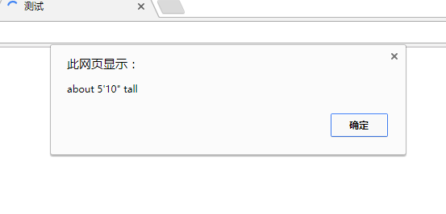
我个人比较喜欢用双引号来包住字符串。作为一个好的编程习惯，不管选择用双引号还是单引号，请在整个脚本中保持一致。如果在同一个脚本中一会使用双引号，一会又使用单引号，代码就很快就会变得难以阅读和理解。
2.2.4.2、数值
如果想给一个变量赋一个数值，不用限定它必须是一个整数。JavaScript允许使用带小数点的数值，并且允许任意位小数，这样的数称为浮点数（floating-point number）：
1 | var age = 33.25; |
2.2.4.3、布尔值
另一种重要的数据类型是布尔（boolean）类型。
布尔数据只有两个可选值–true或false。假设需要这样一个变量：如果我正在睡觉，这个变量将存储一个值；如果我没有睡觉，这个变量将存储另一个值。可以用字符串数据类型把变量赋值为“sleeping”或“not sleeping”，但使用布尔数据类型显然是一个更好的选择：
1 | var sleeping = true; |
从某种意义上讲，为计算机设计程序就是与布尔值打交道。作为最基本的事实，所有的电子电路只能识别和使用布尔数据：电路中有电流或是没有电流。不管是使用术语true和false、yes和no或者1和0，重要的是只能取两种可取值的一种。
布尔值不是字符串，千万不要把布尔值用引号括起来。布尔值false与字符串值”false”是两码事！！
下面这条语句将把变量married设置为布尔值true：
1 | var married = true; |
下面这条语句把变量married设置为字符串”true”：
1 | var married = "true"; |
2.2.4.4、数组
字符串、数值和布尔值都是标量（scalar）。如果某个变量是标量，它在任意时刻就只能有一个值。如果想用一个变量业存储一组值，就需要使用数组（array）。
数组是指用一个变量表示一个值的集合，集合中的每个值都是这个数组的一个元素（emement）。例如，我们可以用名为beatles的变量来保存Beatles乐队全体四位成员的姓名。
在JavaScript中，数组可以用关键字Array声明。声明数组的同时还可以指定数组初始元素个数，也就是这个数组的长度（length）。
1 | var beatles = Array(4); |
有时，我们无法预知某个数组有多少个元素。没有关系，JavaScript根本不要求在声明数组时必须给出元素个数，我们完全可以在声明数组时不给出元素的个数：
1 | var beatles = Array(); |
向数组中添加元素的操作称为填充（populating）。在填充数组时，不仅需要给出新元素的值，还需要给出新元素在数组中的存放位置，这个位置就是这个元素的下标（index）。数组里一个元素一个下标。下标必须用方括号括起来：
1 | array[index] = element; |
现在来填充刚才声明的beatles数组，我们按照Beatles乐队成员的传统顺序（即John、Paul、George和Ringo）进行填充。第一个：
1 | beatles[0] = "John"; |
用0而不是1作为第一个下标多少会让人感到有些不习惯，这是JavaScript世界里的一条规则，所以我们只能这么做。人们很容易忘记这一点，很多程序员新手在刚接触数组时经常在这个问题上犯错误。下面是声明和填充beatles数组的全过程：
1 | var beatles = Array(4); |
我们现在可以在脚本中通过下标值“2”（beatles[2]）来获取元素“George”了。请注意，beatles数组的长度是4，但它最后一个元素的下标却是3。因为数组下标是从0开始计数的，你或许需要一些时间才能习惯这一事实。
像上面这样填充数组未免有些麻烦。有一种相对简单的方式：在声明数组的同时对它进行填充。这种方式要求用逗号把各个元素隔开：
1 | var beatles = Array("John","Paul","George","Ringo"); |
上面这条语句会为每个元素自动分配一个下标：第一个下标是0，第二个是1，依次类推。因此，beatles[2]仍将对应于取值为“George”的元素。
我们甚至用不着明确地表明我们是在创建数组。事实上，只需用一对方括号把各个元素的初始值括起来就可以了：
1 | var beatles = ["John","Paul","George","Ringo"]; |
数组元素不必非得是字符串。可以把一些布尔值存入一个数组，还可以把一组数值存入一个数组：
1 | var years = [1979,1980,1981,1982]; |
甚至可以把这3种数据类型混在一起存入一个数组：
1 | var lennon = ["John",1940,false]; |
数组元素还可以是变量：
1 | var name = "John"; |
这将把beatles数组的第一个元素赋值为“John”。数组元素的值还可以是另一个数组的元素。下面两条语句将把beatles数组的第二元素赋值为“Paul”：
1 | var names = ["Ringo","John","George","Paul"]; |
事实上，数组还可以包含其他的数组！数组中的任何一个元素都可以把一个数组作为它的值：
1 | var lennon = ["John",1940,false]; |
现在，beatles数组的第一个元素的值是另外一个数组。要想获得那个数组里的某个元素的值，需要使用更多的方括号。beatles[0][0]的值是”John”，beatles[0][1]的值是1940，beatles[0][2]的值是false。
这是一种功能相当强大的存储和获取信息的方式，但如果不得不记住第个下标数字的话（尤其是需要从零开始数的时候），编程工作将是一种非常痛苦和麻烦的体验。幸好还有几种方法可以填充数组。首先看看一种更可读的填充数组的方式，然后介绍存放数据的首选方式：将数据保存为对象。
2.2.4.4.1、关联数组
beatles数组是传统数组的典型例子：每个元素的下标是一个数字，每增加一个元素，这个数字就依次增加1。第一个元素的下标是0，第二个元素的下标是1，依次类推。
如果在填充数组时只给出了元素的值，这个数组就将是一个传统数组，它的各个元素的下标将被自动创建和刷新。
可以通过在填充数组时为每个新元素明确地给出下标来改变这种默认的行为。在为新元素给出下标时，不必局限于使用整数数字。你可以用字符串：
1 | var lennon = Array(); |
这样的数组叫做关联数组。由于可以使用字符串来代替数字值，因而代码更具有可读性。但是，这种用法并不是一个好习惯，不推荐大家使用。本质上，在创建关联数组时，你创建的是Array对象的属性。在JavaScript中，所有的变量实际上都是某种类型的对象。比如，一个布尔值就是一个Boolean类型的对象，一个数组就是一个Array类型的对象。在上面这个例子中，你实际上是给lennon数组添加了name、year和living三个属性。理想情况下，你不应该修改Array对象的属性，而应该使用通用的对象（Object）。
2.2.4.5、对象
与数组类似，对象也是使用一个名字表示一组值。对象的每个值都是对象的一个属性。例如，前一节的lennon数组也可以创建成下面这个对象：
1 | var lennon = Object(); |
与使用Array类似，创建对象使用Object关键字。它不使用方括号和下标来获取元素，而是像任何JavaScript对象一样，使用点号来获取属性。创建对象还有一种更简洁的语法，即花括号语法：{propertyName:value,propertyName:value}
比如，lennon对象也可以写成下面这样：var lennon = {name:"John",year:1940,living:false};
属性名与JavaScript变量的命名规则有相同之处，属性值可以是任何JavaScript值，包括其他对象。
用对象来代替传统数组的做法意味着可以通过元素的名字而不是下标数字来引用它们。这大大提高了脚本的可读性。
下面，我们将创建一个新的beatles数组，并用刚才创建的lennon对象来填充它的第一个元素。
1 | var beatles = Array(); |
现在，不需要使用那么多数就可以获得想要的元素。我们不能使用beatles[0][0]而是使用beatles[0].name得到的值”John”。
在此基础上，还可以做进一步的改进：把beatles数组也声明为对象而不是传统数组。这样一来，我们就可以用“drummer”或“bassist”等更有意义且更容易记忆的字符串值–而不是一些枯燥乏味的整数–做为下标去访问这个数组里的元素了：
1 | var beatles = {} |
现在，beatles.vocalist.name的值是“John”，beatles.vocalist.year的值是1940，beatles.vocalist.living值是false。
2.3、操作
此前给出的示例都非常简单，只是创建了一些不同类型的变量而已。要用JavaScript做一些有用的工作，还需要能够进行计算和处理数据。也就是需要完成一些操作（operation）。
2.3.1、算术操作符
1 | //下面是一个简单的加法操作 |
2.4、条件语句
在解释脚本时，浏览器将依次执行这个脚本中的各条语句，我们可以在这个脚本中用条件语句来设置一个条件，只有满足了这一条件才能让更多的语句得到执行。最常见的条件语句是if语句，下面是if语句的基本语法：
1 | if (condition) { |
2.4.1、比较操作符
JavaScript还提供了许多几乎只能用在条件语句里的操作符，其中包括诸如大于（>）、小于（<）、大于或等于（>=）、小于或等于（<=）之类的比较操作符。
如果想比较两个值是否相等，可以使用“等于”比较操作符。这个操作符由两个等号构成（==），单个等号（=）是用于完成赋值操作的。如下：
1 | var my_mood = "happy"; |
JavaScript还提供了一个用来进行“不等于”比较操作符，它由一个感叹号和一个等号构成（!=）
2.4.2、逻辑操作符
JavaScript允许把条件语句里的操作组合在一起。例如，如果想检查某个变量，不妨假设这个变量的名字是num。逻辑“与”操作符&&，逻辑“或”操作符||，逻辑“非”操作符!
2.5、循环语句
if语句或许是最重要、最有用的条件语句了，它的唯一不足是无法完成重复性的操作。在if语句里，包含在花括号里的代码只能执行一次。如果需要多次执行同一代码块，就必须使用循环语句。
循环语句可以让我们反复多次地执行同一段代码。循环语句分为几种不同的类型，但它们的工作原理几乎一样：只要给定条件仍能得到满足，包含在循环语句里的代码就将重复地执行下去；一旦给条件的求值结果不再是ture，循环也就到此为止。
2.5.1、while循环
while循环与if语句非常相似，它们的语法几乎完全一样：
1 | while (condition) { |
while循环与if语句唯一的区别是：只要给定条件的求值结果是true，包含在花括号里的代码就将反复地执行下去。下面是一个while循环的例子：
1 | var count = 1; |
2.5.2、do…while循环
类似于if语句的情况，while循环的花括号部分所包含的语句有可能不被执行，因为对循环控制条件的求值发生在每次循环开始之前，所以如果循环控制条件的首次求值结果是false，那些代码将一次也不会被执行。
&esmp;&esmp;在某些场合，我们希望那些包含在循环语句内部的代码至少执行一次。这时do循环是我们的最佳选择。下面是do循环的语法：
1 | do { |
2.5.3、for循环
用for循环来重复执行一些代码也很方便，它类似于while循环。事实上，for循环只是刚才介绍的while循环的一种变体。如果仔细观察上一小节里的while循环的例子，就会发现它们都可以改写为如下所示的样子：
1 | initialize; |
而for循还不过是进一步改写为如下所示的紧凑形式而已：
1 | for (initial condition;test condition;alter condition) { |
for循环最常见的用途之一是对某个数组里的全体元素进行遍历处理。这往往需要用到数组的array.length属性，这个属性可以告诉我们在给定数组里的元素的个数。一定要记住数组下标是从0而不是1开始。下面的例子中，数组有4个元素。count变量对于数组中每个元素都是从0开始按1递增。数到4时，测试条件失败，循环终止，3是从数组中检索到的最后一个下标。
1 | var beatles = Array("John","Paul","George","Ringo"); |
运行这段代码，将看到4条alert消息，它们分别对应着Beatles乐队的四位成员。
2.6、函数
如果需要多次使用同一段代码，可以把它们封装成一个函数。函数（function）就是一组允许在你的代码里随时高用的语句。事实上，每个函数实际上就是一个短小的脚本。
作为一种良好的编程习惯，应该先对函数做出定义再调用它们。下面就是一个简单的示例函数:
1 | function shout() { |
这个函数里的循环语句将依次弹出对话框来显示Beatles乐队成员的名字。现在,如果想在自己的脚本里执行这一动作，可以随时使用如下的语句来调用这个函数：shout();
每当需要反复做一件事时，都可以利用函数来避免重复键入大量的相同内容。不对，函数的真正威力体现在，你可以把不同的数据传递给它们，而它们将使用这些数据去完成预定的操作。我们把传递给函数的数据称为参数（argument）。定义一个函数的语法：
1 | function name(arguments) { |
JavaScript提供了许多内建函数，在前面多次出现过的alert就是一例。这个函数需要我们提供一个参数，它将弹出一个对话框来显示这个参数的值。
在定义函数时，你可以为它声明任意多个参数，只要用逗号把它们分隔开来就行。在函数的内部，你可以像使用普通变量那样使用它的任何一个参数。
下面是一个需要传递两个参数的函数。如果把两个数值传递给这个函数，这个函数将对它们进行乘法运算：
1 | function multiply(num1,num2) { |
在定义了这个函数的脚本里，我们可以从任意位置去调用这个函数，如下所示：multiply(10,2);
我们还可以创建一个函数并让它返回一个数值、一个字符串、一个数组或一个布尔值。这需要用到return语句：
1 | function multiply(num1,num2){ |
下面这个函数只有一个参数（一个华氏温度值），它将返回一个数值（同一温度的摄氏温度值）：
1 | function convertToCelsius(temp){ |
函数的真正价值体现在，我们还可以把它们当做一种数据类型来使用，这意味着可以把一个函数的调用结果赋给一个变量：
1 | var tmp_fahrenheit=95; |
在这个例子里，变量temp_celsius的值将是35，这个数值由convertToCelsius函数返回。
你一定想了解应该如何命名变量和函数。在命名变量时，我用下划线来分隔各个单词；在命名函数时，我从第二个单词开始把每个单词的第一个字母写成大写形成（也就是所谓的驼峰命名法）。我这么做是为了能够一眼看出哪些名字是变量，哪些名字是函数。与变量的情况一样，JavaScript语言也不允许函数的名字里包含空格。驼峰命名法可以在不违反这一规定的前提下，把变量和函数的名字以一种既简单又明确的方式区分开来。
2.6.1、变量的作用域
前面讲过，作为一种好的编程习惯，在第一次对某个变量赋值时应该用var对其做出声明。当在函数内部使用变量时，就更应该这么做。
变量既可以是全局的，也可以是局部的。在谈论全局变量和局部变量之间的区别时，我们其实是在讨论变量的作用域（scope）。
- 全局变量（global variable）：可以在脚本中的任何位置被引用。一旦你在某个脚本里声明一个全局变量，就可以从这个脚本中的任何位置–包括函数内部–引用它。全局变量的作用域是整个脚本。
- 局部变量（local variable）：只存在于声明它的那个函数内部，在那个函数的外部是无法引用它的。局部变量的作用域仅限于某个特定的函数。
因此，我们在函数里既可以使用全局变量，也可以使用局部变量。这很有用，但它也会导致一些问题。如果在一个函数的内部不小心使用了某个全局变量的名字，即使本意是想使用一个局部变量，JavaScript也会认为是在引用那个全局变量。
还好，可以用var关键字明确地为函数变量设定作用域。
如果在某个函数中使用了var，那个变量就将被视为一个局部变量，它只存在于这个函数的上下文中；反之，如果没有使用var，那个变量就被视为一个全局变量，如果脚本里已经存在一个与之同名的全局变量，这个函数就会改变那个全局变量的值。我们来看下面这个例子：
1 | function square(num){ |
这些代码将不可避免地导致全部变量total的值发生变化，如图2-10所示。
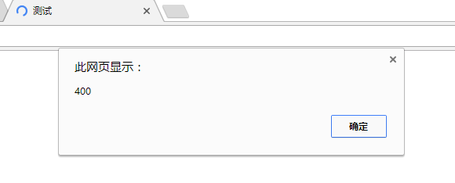
全局变量total的值变成400。我的本意是让square()函数只把它计算出来的平方值返回给变量number，但因为未把这个函数内部的total变量声明为局部变量，这个函数把名字同样是total的那个全局变量的值也改变了。把这个函数写成如下所示的样子才是正确的：
1 | function square(num){ |
现在，全局变量total变得安全了，再怎么调用square()函数也不会影响到它。
请记住，函数在行为方面应该像一个自给自足的脚本，在定义一个函数时，我们一定要把它内部的变量全都明确地声明为局部变量。如果你总是在函数里使用var关键字来定义变量，就能避免任何形式的二义性隐患。
2.7、对象
对象（object）是一种非常重要的数据类型，但此前我们还没有认真对待它。对象是自包含的数据集合，包含在对象里的数据可以通过两种形式依问–属性（property）和方法（method）：
- 属性是隶属于某个特定对象的变量
- 方法是只有某个特定对象才能调用的函数
对象就是由一些属性和方法组合在一起而构成的一个数据实体。在JavaScript里，属性和方法都使用“点”语法来访问：
1 | Object.property |
你已经见过如何用mood和age等变量来存放诸如“心情”和“年龄”之类的值。如果它们是某个对象的属性–这里不妨假设那个对象的名字是Person，我们就必须使用如下所示的记号来使用它们：
1 | Person.mood |
假如Person对象还关联着一些诸如walk()和sleep()之类的函数，这些函数就是这个对象的方法，而我们必须使用如下所示的记号来访问它们：
1 | Person.walk() |
把这些属性和方法全部集合在一起，我们就得到了一个Person对象。
为了使用Person对象来描述一个特定的人，需要创建一个Person对象的实例（instance）。实例是对象的具体个体。例如，你和我都是人，都可以用Person对象来描述；但你和我是两个不同的个体，很可能有着不同的属性（例如，你和我的处龄可能不一样）。因此，你和我对应首两个不同的Person对象–它们虽然都是Person对象，但它们是两个不同的实例。
为给定对象创建一个新实例需要使用new关键字，如下所示：
1 | var jeremy = new Person; |
上面这条语句将创建出Person对象的一个新实例jeremy。我们就可以像下面这样利用Person对象的属性来检索关于jeremy的信息了：
1 | jeremy.age |
对明、属性、方法和实例等概念比较抽象，为了让大家对这些概念有一个直观的认识，我在这里用虚构的Person对象作为例子。JavaScript里没有Person对象。我们可以利用JavaScript来创建自己的对象–术语为用户自定义对象（user-defined object）。这是一个相当高级的主题，我们眼下还无需对它做进一步讨论。
在电视上的烹饪节目里，只要镜头一转，厨师就可以端出一盘美味的菜肴并向大家介绍说：“这是我刚刚做好的”。JavaScript与这种节目里的主持人颇有几分相似：它提供了一系列预先定义好的对象，这引起可以拿来就用的对象称为内建对象（native object）。
2.7.1、内建对象
你其实已经见过一些内建对象了，数组就是其中一种。当我们使用new关键字去初始化一个数组时，其实是在创建一个Array对象的新实例：
1 | var beatles = new Array(); |
当需要了解某个数组有多少个元素时，利用Array对象的length属性来获得这一信息：
1 | beatles.lenght; |
Array对象只是诸多JavaScript内建对象中的一种。其他例子包括Math对象和Date对象，它们分别提供了许多非常有用的方法供人们处理数值和日期值。例如，Math对象的round方法可以把十进制数值舍入为一个与之最接近的整数：
1 | var num=7.561; |
Date对胆可以用来存储和检索与特定日期和时间有关的信息。在创建Date对象的新实例时，JavaScript解释器将自动地使用当前日期和时间对它进行初始化：
1 | var current_date= new Date(); |
Date对象提供了getDay()、getHours()、getMonth()等一系列方法，以供人们来检索与特定日期有关的各有种信息。例如，getDay()方法可以告诉我们给定日期是星期几：
1 | var today = current_date.getDay(); |
在编写JavaScript脚本时，内建对象可以帮助我们愉快速、简单地完成许多任务。
2.7.2、宿主对象
除了内建对象，还可以在JavaScript脚本里使用一些已经预先定义好的其他对象。这些对象不是由JavaScript语言本身而是由它的运行环境所提供的。具体到WEB应用，这个环境就是浏览器。由浏览器提供的预定义的对象称为宿主对象（host Object）。
宿主对象包括Form、Image和Element等。我们可以通过这些对象获得关于网页上的表单、图像和各种表单元素等信息。
本书没有收录几个宿主对象的例子。另一种宿主对象也能用来获得网页上的任何一个元素的信息，它就是docment对象。在本书后续的内容里，我们将向大家介绍docment对象的许多属性和方法。
3、DOM
- 节点的概念
- 5个常用的DOM方法：getElementById、getElementsByTagName、getElementsByClassName、getAttribute和setAttribute
终于要与DOM面对面了。本章将介绍DOM，带领大家透过DOM去看世界。
3.1、文档：DOM中的“D”
如果没有document（文档），DOM也就无从谈起。当创建了一个网页并把它加载到WEB浏览器中时，DOM就在幕后悄然而生。它把你编写的网页文档转换为一个文档对象。
在人类语言中，“对象”这个词的含义往往不那么明确，它几乎可以用来称呼任何一种东西。但在程序设计语言中，“对象”这个词的含义非常明确。
3.2、对象：DOM中的“O”
在上一章的末尾，我们向大家展示了几个JavaScript对象的例子。你应该还记得，“对象”是一种自足的数据集合。与某个特定对象相关联的变量被称为这个对象的属性；只能通过某个特定对象去调用的函数称为这个对象的方法。
JavaScript语言里的对象可以分为三种类型
- 用户定义对象（user-defined object）：由程序员自行创建的对象，本书不讨论这种对象。
- 内建对象（native object）：内建在JavaScript语言里的对象，如Array、Math和Date等
- 宿主对象（host objest）：由浏览器提供的对象
即使是在JavaScript的最初版本里，对编写脚本来说非常重要的一些宿主对象就已经可用了，它们当中最基础的对象是window对象。
window对象对应着浏览器窗口本身，这个对象的属性和方法通常统称为BOM（浏览器对象模型），但我觉得称为Window Object Model（窗口对象模型）更为贴切。BOM提供了window.open和window.blur等方法，这些方法某种程序上要为到处被滥用的各种弹出窗口和下拉菜单负责。难怪JavaScript会有一个不好的名声！
值得庆幸的是，我们不需要与BOM打太多的交道，而是把注意力集中在浏览器窗口内的网页内容上。document对象的主要功能就是处理网页的内容。在本书的后续内容里，我们几乎只讨论document对象的属性我方法。
现在，我们已经对DOM中的字母“D”（document，文档）和字母“O”（object，对象）做了解释，那么字母“M”又代表着什么呢？
3.3、模型：DOM中的“M”
DOM中的“M”代表着“Model”（模型），但说它代表着“Map”（地图）也未尝不可。模型也好，地图也罢，它们的含义都是某种事物的表现形式。就像一个模型火车代表着一列真正的火车、一张城市街道图代表着一个实际存在的城市那样。DOM代表着加载到浏览器窗口的当前网页。浏览器提供了网页的地图（或者说模型），而我们可以通过JavaScript去读取这张地图。
既然是地图，就必须有诸如方向、等高线和比例尺之类的图例。要想看懂和使用地图，就必须知道这些图例的含义和用途，这个道理同样适用于DOM。要想从DOM获得信息，必须先把各种表示的描述文档的“图例”弄明白。
DOM把一份文档表示为一棵树（这里所说的“树”是数字意义上的概念），这里我们理解和运用这一模型的关键。更具体地说，DOM把文档表示为一模家谱树。
家谱树本身又是一种模型。家谱树的典型用法是表示一个人类家族的谱系，并使用parent（父）、child（子）、sibling（兄弟）等记号来表明家庭成员之间的关系。家谱树可以把一些相当复杂的关系简明地表示出来：一位特定的家庭成员既是某些成员的父辈，又是另一位成员的子辈，同时还是另一位成员的兄弟。
家谱树模型非常适合用来表示一份用（X）HTML语言编写出来的文档。
请看图3-1中这份非常基本的网页，它的内容是一份购物清单。
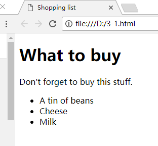
1 | <!DOCTYPE html> |
这份文档可以用图3-2中的模型来表示。
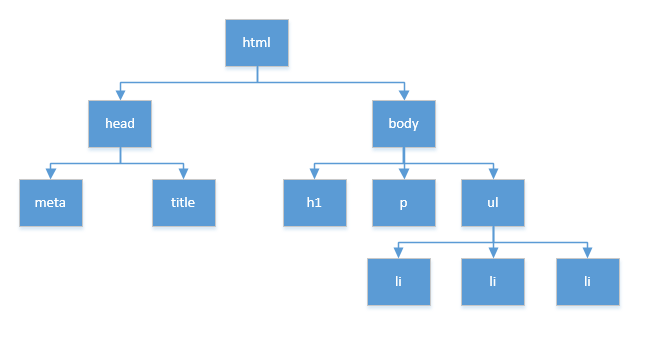
现在我们一米分析一下这个网页的结构，了解它的构成，看看它为什么那么适合用前面提到的模型表示。DOCTYPE之后，一个打开了的<html>标签标识整个文档的开始，这个网页里的所有其他元素都包含在这个元素里，这表示它至少是一个父亲（parent）。又因为所有其他的元素都包含在其内部，所以这个标签既没有父亲，也没有兄弟。如果这是一棵真正的树，这个<html>标签就是树根。
根元素是html。不管从哪个角度看，html都代表整个文档。
接下来深入一层，我们发现有<head>和<body>两个分支。它们位于同一层次且互不包含，所以它们是兄弟关系。它们有着共同的父元素<html>，但又各有各的子元素，所以它们本身又是其他一些元素的父元素。
<meta>和<title>（这两个元素是兄弟关系）。<body>元素有三个子元素：<h1>、<p>和<ul>（这三个元素是兄弟关系）。继续深入下去，我们发现<ul>也是一个父元素，它有三个子元素，它们都是<li>元素，有一些class属性。利用这种简单的家谱关系记号，我们可以把各元素之间的关系简明清晰地表达出来。例如，
<h1>和<ul>之间是什么关系？答案是它们是兄弟关系。那么<body>和<ul>之间又是什么关系？<body>是<ul>的父元素，<ul>是<body>的一个子元素。如果你能把一个文档的各种元素想象成一棵家谱树，我们就可以用同样的术语描述DOM。不过，与使用“家谱树”这个术语相比，把文档称为“节点树”更准确。
3.4、节点
节点（node）这个词是个网络术语，它表示网络中的一个连接点。一个网络就是由一些节点构成的集合。
在现实世界里，一切事物都由原子构成。原子是现实世界的节点。但原子本身还可以进一步分解为更细小的亚原子微粒。这些亚原子微粒同样也被当成是节点。
DOM也是同样的情况。文档是由节点构成的集合，只不过此时的节点是文档树上的树支和树叶而已。
在DOM里有许多不同类型的节点。就像原子包含着亚原子微粒那样，也有很多类型的DOM节点包含其他类型的节点。接下来我们先看看其中的三种：元素节点、文本节点和属情节点。
3.4.1、元素节点
DOM的原子是元素节点（element node）。
在描述刚才那份“购物清单”文档时，我们使用了诸如<body>、<p>和<ul>之类的元素。如果把WEB上的文档比做一座大厦，元素就是建造这座大厦的砖块，这些元素在文档中的布局形成了文档的结构。
标的名字是就是元素的名字。文本段落元素的名字是“p”，无序清单元素的名字是“ul”，列表项元素的名字是“li”。
元素可以包含其他的元素。在我们的“购物清单”文档里，所有的列表项元素都包含在一个无序清单元素的内部。事实上，没有被包含在其他元素里的唯一元素是<html>元素，它是我们的节点树的根元素。
3.4.2、文本节点
元素节点只是节点类型的一种。如果一份文档完全由一些空白元素构成，它将有一个结构，但这份文档本身将不会包含什么内容。在内容为王的互联网上，绝大数内容都是由文本提供的。
在“购物清单”例子里，<p>元素包含着文本“Do not forget to buy this stuff”。它是一个文本节点（text node）。
在XHTML文档里，文本节点总是被包含在元素节点的内部。但并非所有的元素节点都包含有文本节点。在“购物清单”文档里，<ul>元素没有直接包含任何文本节点，它包含着其他的元素节点（一些<li>元素），后者包含着文本节点。
3.4.3、属性节点
属性结点用来对元素做出更具体的描述。例如，几乎所有的元素都有一个title属性，而我们可以利用这个属性对包含在元素里的东西做出准确的描述：
1 | <p title="a gentle reminder">Do not forget to buy this stuff.</p> |
在DOM中，title="a gentle reminder" 是一个属性节点（attribute node），所图3-3所示。
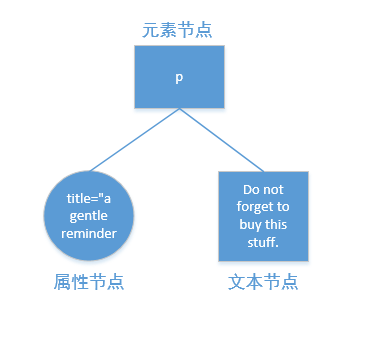
因为属性总是被放在起始标签里，所以属性节点总是被包含在元素节点中。并非所有的元素都包含着属性，但所有的属性都被元素包含。
在前面的“购物清单”示例文档里，可以清楚地看到那个无序清单元素（<ul>）有个id属性。有些清单元素（<li>）有class属性。如果曾经用过CSS，你对id和class之类的属性应该不会感到陌生。不过，为了照顾那些对CSS还不太熟悉的读者，我们下面将简要地重温几个最基本的CSS概念。
3.4.4、CSS
DOM并不是与网成立结构打交道的唯一技术。我们还可以通过CSS（层叠样式表）告诉浏览器应该如何显示一份文档的内容。
类似JavaScript脚本，对样式的声明既可以嵌在文档的<head>部分（<style标签之间），也可以放在另外一个样式表的文件里。CSS声明元素样式的语法与JavaScript函数的定义语法很相似：
1 | selector { |
在样式声明里，我们可以定义浏览器在显示元素时使用的颜色、字体和字号，如下所示：
1 | p { |
继承（inheritance）是CSS技术中的一项强大功能。类似于DOM，CSS也把文档的内容视为一棵节点树。节点树上的各个元素将继承其父元素的样式属性。
例如，如果我们为body元素定义了一些颜色或字体，包含在body元素里的所有元素都将自动获得那些样式：
1 | body { |
这些颜色将不仅作用于那此直接包含在<body>标签里的内容，还将作用于嵌套在body元素内部的所有元素。
图3-4是把刚才定义的样式应用在“购物清单”示例文档上后得到的网页显示效果。
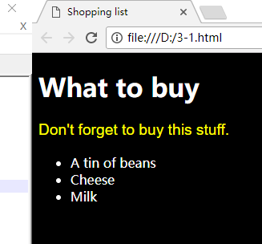
在某些场合，当把样式应用于一份文档时，我们其实只想让那些样式作用于某个特定的元素。例如，我们只想让某一段文本变成某种特殊的颜色和字体，但不想让其他段落受到影响。为了获得如此精细的控制，需要在文档里插入一些能够把这段文本与其他段落区别开来的特殊标志。
为了把某一个或某几个元素与其他元素区别开来，需要使用class属性或id属性。
3.4.4.1、class属性
你可以在所有的元素上任意应用class属性：
1 | <p class="special">This paragraph has the special class</p> |
在样式表里，可以像下面这样为class属性值相同的所有元素定义同一种样式：
1 | .special { |
还可以像下面这样利用class属性为一种特定类型的元素定义一种特定的样式：
1 | h2.special { |
3.4.4.2、id属性
id属性的用途是给网页里的某个元素加上一个独一无二的标识符，如下所示：
1 | <ul id="purchases" > |
在样式表里，可以像下面这样为有特定id属性值的元素定义一种独享的样式：
1 | #purchases { |
尽管id本身只能使用一次，样式表还是可以利用id属性为包含在该特定元素里的其他元素定义样式。
1 | #purchases li { |
id 属性就像是一个挂钩，它一头连着文档里的某个元素，另一头连着CSS样式表里的某个样式。DOM也可以使用这种挂钩。
3.4.5、获取元素
有3种DOM方法可以获取元素节点，分别是通过元素ID、通过标签名字和通过类名字来获取。
3.4.5.1、getElementByID
DOM提供了一个名为getElementById的方法，这个方法将返回一个与那个有着给定id属性值的元素节点对应的对象。请注意，JavaScript是区分字母大小写的，所以在写出“getElementById”时千万不要把大小写弄错了。如果把它错写成“GetElementById”或“getElementbyid”，你都得不到正确的结果。
它是document对象特有的函数。在脚本代码里，函数名的后面必段跟有一对圆括号，这对圆括号包含着函数的参数。getElementById方法只有一个参数：你想获得的那个元素的id属性的值，这个id值必须放在单引号或双引号里。document.getElementById(id)
下面是一个例子：
1 | document.getElementById("purchases") |
这个调用将返回一个对象，这个对象对应着document对象里的一个独一无二的元素，那个元素的HTML id属性值是purchases。你可以用typeof操作符来验证这一点。typeof操作符可以告诉我们它的操作数是一个字符串、数值、函数、布尔值还是对象。
下面是把一些JavaScript语句插入到前面给出的“购物清单”文档之后得到的一份代码清单，新增的代码出现在</body>结束标签之前。顺便说一句，我本人并不赞成把JavaScript代码直接嵌入文档，但这确实是一种简便快捷的测试手段：
1 |
|
把上面的这些代码保存为一个XHTML文件。当在Web浏览器加载这个文件，会弹出一个如图3-6所示的alert对话框，它向你们报告document.getElmentById("purchases")的类型–它是一个对象。如下图
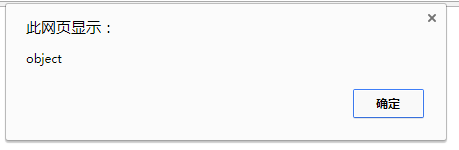
事实上，文档中的每一个元素都是一个对象。利用DOM提供的方法能得到任何一个对象。一般来说，用不着为文档里的每个元素都定义一个独一无二的id值，那也太小题大做了。DOM提供了另一个方法来获取那些没有id属性的对象。
3.4.5.2、getElementsByTagName
getElementsByTagName方法返回一个对象数组，每个对象分别对应着文档里有着给定标签的一个元素。类似于getElementId，这个方法也是只有一个参数的函数，它的参数是标签的名字：
1 | element.getElementsByTagName(tag) |
它与getElementById方法有许多相似之处，但它返回的是一个数组，你在编写脚本时千万注意不要把这两个方法弄混了。下面是一个例子：
1 | docment.getElementsByTagName("li") |
这个调用将返回一个对象数组，每个对象分别对应着document对象中的一个列表项元素。与任何其他的数组一样，我们可以利用length属性查出这个数组里的元素个数。
首先，在上一小节给出的XHTML示例文档里把<script>标签中的alert语句替换为下面这条语句：
1 | alert(document.getElementsByTagName("li").length); |
你会看到这份示例文档里的列表项元素的个数：3。这个数组里的每个元素都是一个对象。可以通过利用一个循环语句和typeof操作符去遍历这个数组来验证这一点。例如，你可试试下面这个for循环：
1 | for (var i=0;i<document.getElementsByTagName("li").length;i++) { |
请注意，即使在整个文档里这个标签只有一个元素，getElementsByTagName也返回一个数组，此时，那个数组的长度是1。
你或许已经开始觉得用键盘反复敲入document.getElementsByTagName(“li”)是件很麻烦的事件，而这些长长的字符串会让代码变得越来越难以阅读。有个简单的方法可以减少不必要的打字量并改善代码的可读性：只要把document.getElementsByTagName("li")赋值给一个变量即可。请把<script>标签中的alert语句替换为下面这些语句：
1 | var items = document.getElementsByTagName("li"); |
现在，你将看到三个alert对话框，显示的消息是“object”。
getElementById和getElementsByTagName结合起来运行。例如刚才给出的几个例子都是通过document对象调用getElementsByTagName的，如果只想知道id属性值是purchase的元还给包含着多少个列表项，必须通过一个更具体的对象去调用这个方法，如下所示：
1 | var shopping = document.getElementById("purchases"); |
在这两条语句执行完毕后，items数组将只包含id属性值是purchase的无序清单里的元素。具体到这个例子，items数组的长度刚好与这份文档里的列表项元素的总数相等：alert(items.length);
如果还需要更多的证据，下面这些语句将证明items数组里的每个值确实是一个对象：
1 | for (var i = 0; i < items.lenght; i++) { |
3.4.5.3、getElementsByClassName
HTML5 DOM(http://www.whatwg.org/specs/web-apps/current-work/ )中新增了一个令人期待已久的方法：getElementByClassName。这个方法让我们能够通过class属性中的类名来访问元素。不过，由于这个方法还比较新，某些DOM实现里可能还没有，因此在使用的时候要当心。下面我们先来看一看这个方法能帮我们做什么，然后再讨论怎么可靠地使用该方法。
与getElementsByTagName方法类似，getElementsByTagName也只接受一个参数，就是类名：getElementsByClassName(class)，这个方法的返回值也与getElementsByTagName类似，都是一个具有相同类名的元素的数组。下面这行代码返回的就是一个数组，其中包含类名为“sale”的所有元素：
1 | document.getElementsByClassName("sale") |
使用这个方法还可以查找那些带有多个类名的元素。要指定多个类名，只要在字符串参数中用空格分隔类名即可。例如，在<script>标签中添加下面这行alert代码：
1 | alert(document.getElementsByClassName("important sale").length); |
你会看到警告框中显示1，表示只有一个元素匹配，因为只有一个元素同时带有“important”和“sale”类名。注意，即使在元素的class属性中，类名的顺序是“sale import”而非参数中指定的“import sale”，也照样会匹配该元素。不仅类名的实际顺序不重要，就算元素还带有更多类名也没有关系。
与使用getElementsByTagName一样，也可以组合使用getElementsByClassName和getElementById。如果你想知道在id为“purchases”的元素中有多少类名包含“sale”列表项，可以先找到那个特定的对象，然后再调用getElementsByClassName:
1 | var shopping = docment.getElementById("purchases"); |
这样，sales数组中包含的就只是位于“purchases”列表中的带有“sale”类的元素。运行下面这行代码，就会看到sales数组中包含两项：alert(sales.length);
这个getElementsByClassName方法非常有用，但只有较新的浏览器才支持它。为了弥补这一不足，DOM脚本程序员需要使用已有的DOM方法来实现自己的getElementsByClassName；有点像是成人礼似的。而多数情况下，他们的实现过程都与下面这个getElementsByClassName大至相似，这个函数能适用于新老浏览器：
1 | function getElementsByClassName(node, classname) { |
这个getElementsByClassName函数接受两个参数。第一个node表示DOM树中的搜索起点，第二个classname就是要搜索的类名了。如果传入节点上已经存在了适当的getElementsByClassName函数，那么这个新函数就直接返回相应的节点列表。如果getElementsByClassName函数不存在，这个新函数就会循环遍历所有标签，查找带有相应类名的元素。（这个例子不适用于多个类名。）如果使用这个函数来模拟前面取得购物列表的操作，就可以这样写：
1 | var shopping = document.getElementById("purchases"); |
当然搜索匹配的DOM元素的方法有很多，但直正高效的却不多，有兴趣的读者可以参考Robert Nyman的文章The Ultimate getElementsByClassName(http://robernyman.com/2008/05/27/theultimate-gelementsbyclassname-anno-2008 )。
第5章将继续讨论类似的支持性的问题，以及如何解决这些问题。第7单将更详细地控讨DOM操作方法。
3.4.6、盘点知识点
你一定已经厌倦了看那么多遍显示着单词“object”的alert对话框。你一定已经明白：文档中的每个元素节点都是一个对象。不仅如此，这些对象中的每一个还天生具有一系列非常有用的方法，还要归功于DOM。利用这些预先定义好的方法，我们不仅可以检索出文档里任何一个对象的信息，甚至还可以改变元素的属性。
下面是对本章此前学习内容的一个简要总结
- 一份文档就是一棵节点树
- 节点分为不同的类型：元素节点、属性节点和文本节点等。
- getElementById将返回一个对象，该对象对应着文档里的一个特定的元素节点。
- getElementsByTagName和getElementByClassName将返回一个对象数组，它们分别对应着文档里的一组特定的元素节点。
- 每个节点都是一个对象
接下来介绍节点对象的属性和方法。
3.5、获取和设置属性
至此，我们已经介绍了3种获取特定元素的方法：分别是getElementById，getElementsByTagName和getElementByClassName。得到需要的元素以后，我们就可以设法获取它的各个属性。getAttribute方法就是用来做这件事的。相应地，setAttribute方法则可以更改属性节点的值。
3.5.1、getAttribute
getAttribute是一个函数。它只有一个参数–你打算查询的属性名字：
1 | object.getAttribute(attribute) |
与此前我们介绍过的那些方法不同，getAttribute方法不属于document对象，所以不能通过document对象调用。它只能通过元素节点对象调用。例如，可以与getElementsByTagName方法合用，获取每个<p>元素的title属性，如下所示：
1 | var paras = document.getElementsByTagName("p"); |
把上面这段代码放到前面给出的“购物清单”文件的末尾，然后在WEB浏览器里重新加载这个页面，屏幕上将弹出一个显示着文本消息“a gentle reminder”的alert对话框。
在“购物清单”文件里只有一个<p>元素，并且它有title属性。假如这份文档有更多个<p>元素，并且它们没有title属性，则getAttribute(“title”)方法会返回null值。在JavaScript里，null含义是“没有值”。把下面代码添加到“购物清单”文件中的现有<p>标签之后：<p>This is just a test</p>
重新加载这个页面。这一次，你将看到两个alert对话框，而第二个对话框将是一片空白或者是只显示着单词“null”，这取决于你哪种Web浏览器。
我们可以修改脚本，让它只在title属性有值时才弹出消息。我们将增加一条if语句来检查getAttribute的返回值是不是null。趁着这个机会，我们顺便增加几个变量以提高脚本的可读性。
1 | var paras = document.getElementsByTagName("p"); |
现在重新加载这个页面，你会看到一个显示着“a gentle reminder”消息的alert对话框，如图3-7所示。
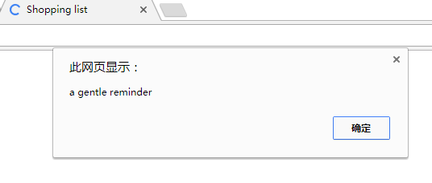
我们甚至可以把这段代码缩得更短一些。当检查某项数据是否是null值时，我们其实是在检查它是否存在。这种检查可以简化为直接把被检查的数据用作if语句的条件。if(something)与if(something != null)完全等价，但是前者显然更为简明。此时，如果something存在，则if语句条件将为真；如果something不存在，则if语句的条件将为假。
具体到这个例子，只要我们把if(title_text != null)替换为if(title_text)，我们就可以得到更简明的代码。此外，为了进一步增加代码的可读性，我们还可以趁此机会把alert语句与if语句写在同一行上，这可以让它们更接近于我们日常生活中的英语句子：
1 | var paras=document.getElementsByTagName("p"); |
3.5.2、setAttribute
此前介绍的所有方法都是用来获取信息。setAttribute()有点不同：它允许我们对属性节点的值做出修改。与getAttribute一样，setAttribute也只能用于元素节点：
1 | object.setAttribute(attribute,value) |
在下面的例子里，第一条语句得到id是purchase的元素，第二条语句是把这个元素的title属性值设置为a list of goods:
1 | var shopping = document.getElementById("purchase"); |
我们可以利用getAttribute来证明这个元素的title属性值确实发生了变化
1 | var shopping = document.getElementById("purchase"); |
加载页面后将弹出两个alert对话框：第一个alert对话框出现在setAttribute被调用之前，它将是一片空白或显示单词“null”；第二个出现在设置title属性值之后，它将显示“a list of goods”消息。
在上例中，我们设置了一个节点title属性，这个属性原先并不存在。这表明setAttribute实际上完成了两项操作：先创建这个属性，然后设置它的值。如果setAttribute用在一个本身就有这个属性的元素节点上，这个属性的值就会被覆盖掉。
在购物清单示例文档里，
元素已经有了一个title属情，这个属性的值是a gentle reminder。可以用setAttribute来改变它的值：
1 | var paras = document.getElementsByTagName("p"); |
上面这段代码将先从文档里获取全部带有title属性的<p>元素，然后把它们的title属性值都修改为brand new title text。对“购物清单”文件来说，属性值a gentle reminder会被覆盖。
这里有一个非常值行关注的细节：通过setAttribute对文档做出修改后，在通过浏览器的view source（查看源码）选项去查看文档本身的源代码里。这种“表里不一”的现够用源自DOM的工作模式：先加载文档的静态内容，再动态刷新，动态刷新不影响文档的静态内容。这正是DOM的真正威力：对页面内容进行刷新去不需要在浏览器里刷新页面。
4、案例研究：JavaScript图片库
- 编写一个优秀的标记文件
- 编写一个JavaScript函数以显示用户想要查看的图片
- 由标记触发函数调用
- 使用几个新方法扩展这个JavaScript函数
现在，是时候让DOM去做些事了。在这一章中，我将带领大家用JavaScript和DOM去建立一个图片库。
把图片发布到网上的办法很多。你可以简单地把所有图片都放到一个网页里。不过如果想打算发布的图片比较多，这个页面就很快变得过于庞大。要知道，虽然网页标记代码没有多大，但加上那些图片后用户要下载的数据量就相当可观了。我们必须而对这样一个现实：没有人愿意等待很长很长的时间去下载一个网页。
因此，为每张图片分别创建一个网页的解决方案值得考虑。这样你的图片库将不再是一个体积庞大、难以下载的网页，而变成了许多个尺寸合理、便于下载和浏览的页面。不过，这一解决方案并非尽善尽美。首先，为每张图片分别制作一个网页需要花费很多很多的时间；其次，每个网页上应该提供某种导航链接来给出当前图片在整个图片库里的位置，方便人们从当前图片转到其他图片。
如果想两全其美，利用JavaScript来创建图片库将是最佳的选择：把整个图片库的浏览链接集中安排在图片库主页里，只在用户点击了这个主页里的某个图片链接时才把相应的图片传送给他。
4.1、标记
为了完成JavaScript图片库，我特意用数码相机拍摄了几张照片，并把它们修整成最适合于用浏览器来查看的尺寸，即400像素宽×300像素高。在你自己做练习时，大可不必拘泥于这个尺寸，你可以使用任何尺寸。
第一项工作是为这些图片创建一个链接清单。国为我没打算让这些图片按照特定顺序排列，所以将使用一个无序清单元素（<ul>）来列出那些链接。如果你自己的图片已事先排好序，那就最好使用一个有序清单元素（
- ）来标记这些图片链接。
- 当点击某个链接时，我希望能留在这个网页而不是转到另一个窗口
- 当点击某个链接时，我希望能在这个网页上同时看到那张图片以及原有的图片清单。
- 通过增加一个“占位符”图片的办法在这个主页上为图片预留一个浏览区域。
- 在点击某个链接时，拦截这个网页的默认行为
- 在点击某个链接时，把“占位符”图片替换为与那个链接相对应的图片。
- 元素节点的nodeType属性值是1
- 属性节点的nodeType属性值是2
- 文本节点的nodeType属性值是3
下面是我的标记清单：
1 | <!DOCTYPE html> |
我们将把这些标记保存到gallery.html文件，并把图片集中保存在目录images里。我的images目录和gallery.html文件位于同一个目录下。在gallery.html文件里，无序清单元素中的每个链接分别指向不同的图片。在浏览器窗口里点击某个链接就可以转到相应的图片，但从图片重新返回到链接清单目前还必须借助于浏览器Back（回退）按钮。图4-1是这个基本的链接清单在浏览器窗口里的显示效果。
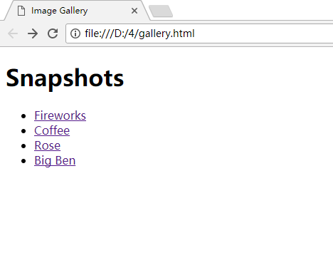
这是一个相当令人满意的网页，但它的默认行为还不太理想。下面是我希望改进的几个地方。
下面是我为了实现上述的目标而需要完成的几项改进
先来解决“占位符”图片的问题。我选用了一个类似于名片的图片，你可以根据个人喜好来决定选用的图片，即使选用一个空白图片也没问题。
把下面这些代码插入到图片清单的末尾：
1 | <img id="placeholder" src="images/placeholder.gif" alt="my image gallery" /> |
我对这个图片的id属性进行了设置，这将使我可以通过一个外部的样式表对图片的显示位置和显示效果加以控制。例如，可以让这个图片出现在链接清单的旁边而不是它的下方，还可以在自己的JavaScript代码里使用这个id值。下面是这个页面在增加了“占位符”图片后的显示效果。
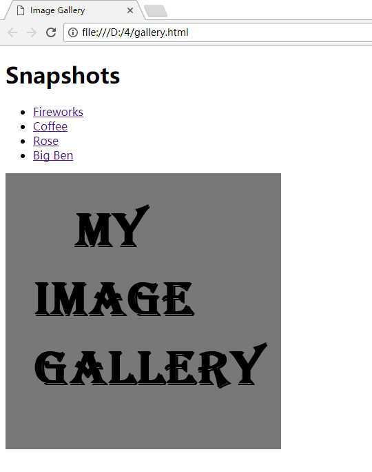
现在，标记文件已经准备好了，接下来的工作是编写JavaScript代码。
4.2、JavaScript
为了把“点位符”图片替换为想要查看的图片，需要改变它的src属性。setAttribute是完成这项工作的最佳选择，而我将利用这个方法写一个函数。这个函数只有一个参数，即一个图片链接。它通过改变“占位符”图片的src属性的办法将其替换为参数图片。
首先，需要给函数起一个好名字，它应能描述这个函数的用途，还要简明扼要。我决定把这个函数命名为showPic。还需要给这个函数的参数起一个名字，我决定把它命名为whichpic：
1 | function showPic(whickpic) |
whickpic代表着一个元素节点，具体地说，那是一个指向某个图片的<a>元素。我需要分解出图片的文件路径，这可以通过在whickpic元素上调用getAttribute得到，只要把“href”作为参数传递给getAttribute就行了：
1 | showpic.getAttribute("href") |
我将把这个路径存入变量source:
1 | var source = showpic.getAttribute("href") |
接下来，还需要获取“占位符”图片，这对getElementById来说不过是小菜一碟：
1 | document.getElementById("placeholder") |
我不想重复敲入“document.getElementById(“placerholder”)”这么长的字符串，所以将把这个元素赋给变量placerholder：
1 | var placeholder = document.getElementById("placeholder"); |
现在，已经声明并赋值了两个变量：source和placerholder。它们可以让脚本简明易读。我将使用setAttribute对placerholder元素的src属性进行刷新。还记得吗，这个方法有两个参数：一个是属性名，另一个是属性的值。具体到这个例子，因为我想对src属性进行设置，所以第一个参数是“src”；至于第二个参数，也就是src属性的值，我已经把它保存在source变量里了：
1 | placerholder.setAttribute("src",source); |
4.2.1、非DOM解决方案
其实，不使用setAttribute方法也可以改变图片的src属性。
setAttribute方法是“第1级DOM（DOM Level 1）”的组成部分，它可以设置任意元素节点的任意属性。在“第1级DOM”出现之前，你可以通过另外一种办法设置大部分元素的属性，这个办法到现在仍然有效。例如，如果想改变某个input元素的value属性，可以这样：
1 | element.value = "the new value" |
这与下面语句的效果是等价的：
1 | element.setAttribute("value","the new value"); |
类似的方法也可以用来改变图片的src属性。例如，在我的图片库脚本里，完全可以用下面这条语句来代替setAttribute:
1 | placeholder.src = souce |
我个人更喜欢使用setAttribute。起码不必费心去记忆哪些元素的哪些属性可以用DOM之前的哪些方法去设置。虽然用那些老办法可以毫无问题地对文档里的图片、表单和其他一些元素的属性进行设置，但setAttribute的优势在于它可以修改文档中的任何一个元素的任何一个属性。
“第1级DOM”的另一个优势是可移植性更好。那些老方法只适用于WEB文档，DOM则适用于任何一种标记语言。虽然这种差异对我们这个例子没有影响，但我希望大家能够牢牢记住这一点：DOM是一种适用于多种环境和多种程序设计语言的通用型API。如果想把从本书学到的DOM技巧运用在WEB浏览器以外的应用环境里，严格遵守“第1级DOM”能够让你避免与兼容性有关的任何问题。
4.2.2、最终的函数代码清单
下面是showPic函数完整的代码清单：
1 | function showPic(whichpic) { |
4.3、应用这个JavaScript函数
函数写完了，接下来就要在图片库文档里使用它。把这个函数保存在扩展名为js的文本文件中。在此，可以给它起个名字叫showPic.js
若一个站点用到多个JavaScript文件，为了减少对站点的请求次数（提高性能），应该把这些.js文件合并到一个文件中。本书为了便于说明问题，不少例子都使用了多个文件。等到第5章，我们会专门讨论这个问题以及其他提升站点性能的最佳实践。
就像我刚才决定把所有的图片集中存放在images子目录里那样，把所有的JavaScript脚本文件集中存在一个子目录里是一个好主意。我创建了一个名为script的子目录并把showPic.js文件保存到其中。
现在，需要在图片库文档里插入一个链接来引用这个Javascript脚本文件。我将把下面这行插入到HTML文档的</body>标签之前。
1 | <script type="text/javascript" src="script/showPic.js"></script> |
这样在图片库文档里就可以使用showPic函数了。如果到此打住，那么showPic函数永远也不会被调用。我们需要给图片列表的链接添加行为，也就是事件处理函数（event handler），才能达成目标。
4.3.1、事件处理函数
事件处理函数的作用是，在特定事件发生时调用特定的JavaScript代码。例如，如果想在鼠标指针悬停在某个元素上时触发一个动作，就需要使用onmouseover事件处理函数；如果想在鼠标指针离开某个元素时触发一个动作，就需要使用onmouseout事件处理函数。在我的图片库里，我想在用户点击某个链接时触发一个动作，所以需要使用onclick事件处理函数。
需要注意的是showPic()函数需要一个参数：一个带有href属性的元素节点参数。当我把onclick事件处理函数嵌入到一个链接中时，需要把这个链接本身用作showPic函数的参数。
有个非常简单有效的办法可以做到这一点：使用this关键字。这个关键字在这儿的含义是“这个对象”。具体到当前的例子，this表示“这个元素节点”：
1 | showPic(this) |
综上所述，我将使用onclick事件处理函数来给链接添加行为。添加事件处理函数的语法如下所示：
1 | event = "JavaScript statement(s)" |
请注意，JavaScript代码包含在一对引号之间。我们可以把任意数量的JavaScript语句放在这对引号之间，只要把各条语句用分号隔开即可。
下面这样onclick事件就可以调用showPic方法了：
1 | onclick = "showPic(this);" |
不过，如果仅仅把事件处理函数放到图片列表的一个链接中，我们会遇到一个问题：点击这个链接时，不仅showPic函数被调用，链接被点击的默认行为也会被调用。这意味着用户还是会被带到图片查看窗口，而这是我不希望发生的。我需要阻止这个默认行为被调用。
让我们近距离了解一下事件处理函数的工作机制。在给某个元素添加了事件处理函数后，一旦事件发生，相应的javascript代码就会得到执行。补调用的javascript代码可以返回一个值，这个值将被传递给那个事件处理函数。例如，我们可以给某个链接添加一个onclick事件处理函数，并让这个处理函数所触发的javascript代码返回的值是true，onclick事件处理函数就认为“这个链接被点击了”；反之，如果返回值是false，onclick事件处理函数就认为“这个链接没有被点击”。
可以通过下面这个简单测试去验证这一结论：
1 | <a href="http://www.example.com" onclick="return false;" >Click me</a> |
当点击这个链接时，因为onclick事件处理函数所触发的JavaScript代码返回给它的值是false，所以这个链接的默认行为没有被触发。
同样道理，如果像下面这样，在onclick事件处理函数所触发的javascript代码里增加一条return false;语句，就可以防止用户被带到目标链接窗口：
1 | onclick = "showPic(this); return false;" |
下面是最终完成的onclick事件处理函数在图片库HTML文档里的样子：
1 | <li> |
接下来，我要在图片列表的每个链接上添加这个事件处理函数。这当然有些麻烦，但眼下只能这么做，我们将在第6章介绍一个避免这种麻烦的办法。下面的标记文档是我一个个手动添加onclick事件处理函数之后的样子：
1 | <li> |
现在，把这个页面加载到Web浏览器里，你将看到一个能够正常工作的“JavaScript图片库”：如图4-3所示，不管点击图片列表里的哪个链接，都能在这个页面里看到相应的图片。
4.4、对这个函数进行扩展
在一个网页上切换显示不同的图片并不是什么新鲜事。早在W3C推出它们标准化的DOM和JavaScript语言之前，有着这类效果的网页和脚本就已经出现了，如今更是得到了广泛的流行。
在这种情形下，如果想让自己与众不同，就必须另辟蹊径。有没有想过在同一个网页上切换显示不同的文本？利用JavaScript语言和DOM，确实可以做到这一点。
图片库文档里的每个图片链接都有一个title属性。可以把这个属性取出来并让它和相应的图片一同显示在网页上。title属性的值可以用getAttribute轻而易举地得到：
1 | var text = whichpic.getAttribute("title"); |
光提取title属性的值还不够，我们还需要把它插入到HTML文档中。为完成这一工作，我需要用到几个新的DOM属性。
4.4.1、childNodes属性
在一棵节点树上，childNodes属性可以用来获取任何一个元素的所有子元素，它是一个包含这个元素全部子元素的数组：
1 | element.childNodes |
假设需要把某个文档的body元素的全体子元素检索出来。首先，我们使用getElementsByTagName得到body元素。因为每份文档只有一个body元素，所以它将是getElementByTagName(“body”)方法所返回的数组中的第一个（也是唯一一个）元素：
1 | var body_element = document.getElementsByTagName("body")[0]; |
现在，变量body_element已经指向了那个文档的body元素。接下来，可以用如下所示的语法获取body元素的全体子元素：
1 | body_element.childNodes |
这显然要比像下面这样写简明得多：
1 | document.getElementsByTagName("body")[0].childNodes |
现在，已经知道如何获取body元素的全体子元素了，接下来看看这些信息的用途。
首先，可以精确地查出body元素一共有多少个子元素。因为childNodes属性返回的是一个数组，所以用数组的length属性就可以知道它所包含的元素的个数：
1 | body_element.childNodes.length; |
现在把下面这个小函数添加到showPic.js文件里：
1 | function countBodyChildren(){ |
这个简单的小函数将弹出一个alert对话框，显示body元素的子元素的总个数。
我想让这个函数在页面加载时执行，而这需要使用onload事件处理函数。把下面这条语句添加到代码段的末尾：
1 | window.onload = countBodyChildren; |
这条语句的作用是在页面加载时调用countBodyChildren函数。
在WEB浏览器里刷新gallery.html文件。你会看到一个alert对话框，其显示的内容是body元素的子元素的总个数。这个数字很可能会让你大吃一惊。
4.4.2、nodeType属性
根据gallery.html文件的结构，body元素应该只有3个子元素：一个h1元素、一个ul元素和一个img元素。可是，countBodyChildren()函数给出来的数字却远大于此，这是因为文档树的节点类型并非只有元素节点一种。
由childNodes属性返回的数组包含所有类型的节点，而不仅仅是元素节点。事实上，文档里几乎每一样东西都是一个节点，甚至连空格和换行符都会被解释为节点，而它们也全都包含在childNodes属性所返黑历史的数组当中。
因此，countBodyChildren的返回结果才会这么大。
还好，每一个节点都有nodeType属性。这个属性可以让我们知道自己正在与哪一种节点打交道，差劲的一点是nodeType的值并不是英文。
用下面的语法获取节点的nodeType属性：
1 | node.nodetype |
nodeType的值是一个数字而不是像“element”或“attribute”那样的英文字符串。
为了验证这一点，把countBodyChildren中的alert语句替换为下面这条语句，这样一来，我们就知道body_element元素的nodeType属性了：
1 | alert(body_element.nodeType); |
在Web浏览器里刷新gallery.html文件，将看到一个显示数字“1”的alert对话框。换句话说，元素节点的nodeType属性值是1。
nodeType属性总共有12种可取值，但其中仅有3种具有实用价值。
这就意味着，可以让函数只对特定类型的节点进行处理。例如，完全可以编写出一个只处理元素节点的函数。
4.4.3、在标记里增加一段描述
为了增强我的图片库的函数，我决定维护一个文本节点。我想在显示图片时，把这个文本节点的值替换成目标图片链接的title的值。
首先，需要为目标文本安排显示位置。我在gallery.html文件里增加一个新的文本段。我把它安排在标签之后，为它设置一个独一无二的id值，这样就能在JavaScript函数里方便的引用它：
1 | <p id="description">Choose an image.</p> |
上面这条语句将把<p>元素的id属性为description（描述），这个id可以让这个元素的用途一目了然。如图4-4所示，包含在此元素里的文本现在是“Choose an image.”，你能看到添加了新段落。
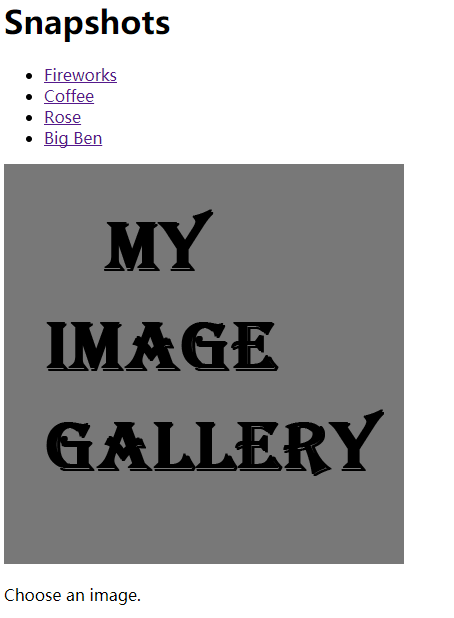